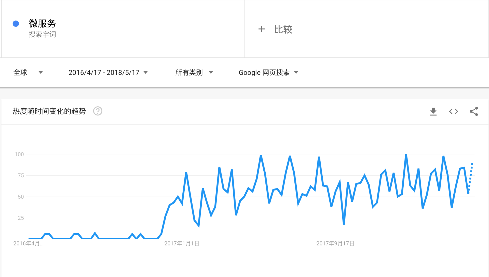

- 00 开篇词 微服务，从放弃到入门.md.html
- 01 到底什么是微服务？.md.html
- 02 从单体应用走向服务化.md.html
- 03 初探微服务架构.md.html
- 04 如何发布和引用服务？.md.html
- 05 如何注册和发现服务？.md.html
- 06 如何实现RPC远程服务调用？.md.html
- 07 如何监控微服务调用？.md.html
- 08 如何追踪微服务调用？.md.html
- 09 微服务治理的手段有哪些？.md.html
- 10 Dubbo框架里的微服务组件.md.html
- 11 服务发布和引用的实践.md.html
- 12 如何将注册中心落地？.md.html
- 13 开源服务注册中心如何选型？.md.html
- 14 开源RPC框架如何选型？.md.html
- 15 如何搭建一个可靠的监控系统？.md.html
- 16 如何搭建一套适合你的服务追踪系统？.md.html
- 17 如何识别服务节点是否存活？.md.html
- 18 如何使用负载均衡算法？.md.html
- 19 如何使用服务路由？.md.html
- 20 服务端出现故障时该如何应对？.md.html
- 21 服务调用失败时有哪些处理手段？.md.html
- 22 如何管理服务配置？.md.html
- 23 如何搭建微服务治理平台？.md.html
- 24 微服务架构该如何落地？.md.html
- 25 微服务为什么要容器化？.md.html
- 26 微服务容器化运维：镜像仓库和资源调度.md.html
- 27 微服务容器化运维：容器调度和服务编排.md.html
- 28 微服务容器化运维：微博容器运维平台DCP.md.html
- 29 微服务如何实现DevOps？.md.html
- 30 如何做好微服务容量规划？.md.html
- 31 微服务多机房部署实践.md.html
- 32 微服务混合云部署实践.md.html
- 33 下一代微服务架构Service Mesh.md.html
- 34 Istio：Service Mesh的代表产品.md.html
- 35 微博Service Mesh实践之路（上）.md.html
- 36 微博Service Mesh实践之路（下）.md.html
- 微博技术解密（上） 微博信息流是如何实现的？.md.html
- 微博技术解密（下）微博存储的那些事儿.md.html
- 结束语 微服务，从入门到精通.md.html
- 阿忠伯的特别放送 答疑解惑01.md.html
- 阿忠伯的特别放送 答疑解惑02.md.html
- 捐赠
01 到底什么是微服务？
从谷歌的搜索指数来看，微服务的热度在进入2017年后突然爆发，国内各大会议和论坛的相关讨论也如雨后春笋般层出不穷，各大一线互联网公司也纷纷将这一技术引入并在实际业务中落地。

然而据我所知，国内不少中小规模的技术团队对微服务的概念都不甚了解，对该不该引入微服务也不置可否。还有一些技术团队，没有考虑实际业务场景，只是为了追求技术热点，盲目引入微服务，但又缺乏相应的技术掌控能力，最后影响了业务的稳定性。
对于该不该引入微服务，以及微服务体系需要哪些技术，目前并没有适合中小团队的架构实践落地的指引。因此我结合自己在微博多年的业务实践，总结出了一套微服务落地经验，从基础理论到架构实践，再结合业界最新趋势分析，希望能帮助中小规模团队了解微服务的本质以及对业务的价值，从而做出正确的判断。
我们先来看看维基百科是如何定义微服务的。微服务的概念最早是在2014年由Martin Fowler和James Lewis共同提出，他们定义了微服务是由单一应用程序构成的小服务，拥有自己的进程与轻量化处理，服务依业务功能设计，以全自动的方式部署，与其他服务使用HTTP API通讯。同时，服务会使用最小规模的集中管理 （例如Docker）技术，服务可以用不同的编程语言与数据库等。
这个理论的定义看着有点晕？没关系，接下来我来帮你理解到底什么是微服务？
单体应用
在开聊微服务之前，我先要你和介绍下单体应用。如果你不知道单体应用的痛，那也不会深刻理解微服务的价值。
早些年，各大互联网公司的应用技术栈大致可分为LAMP（Linux + Apache + MySQL + PHP）和MVC（Spring + iBatis/Hibernate + Tomcat）两大流派。无论是LAMP还是MVC，都是为单体应用架构设计的，其优点是学习成本低，开发上手快，测试、部署、运维也比较方便，甚至一个人就可以完成一个网站的开发与部署。
以MVC架构为例，业务通常是通过部署一个WAR包到Tomcat中，然后启动Tomcat，监听某个端口即可对外提供服务。早期在业务规模不大、开发团队人员规模较小的时候，采用单体应用架构，团队的开发和运维成本都可控。
然而随着业务规模的不断扩大，团队开发人员的不断扩张，单体应用架构就会开始出现问题。我估计经历过业务和团队快速增长的同学都会对此深有感触。从我的角度来看，大概会有以下几个方面的问题。
部署效率低下。以我实际参与的项目为例，当单体应用的代码越来越多，依赖的资源越来越多时，应用编译打包、部署测试一次，甚至需要10分钟以上。这也经常被新加入的同学吐槽说，部署测试一次的时间，都可以去楼下喝杯咖啡了。
团队协作开发成本高。以我的经验，早期在团队开发人员只有两三个人的时候，协作修改代码，最后合并到同一个master分支，然后打包部署，尚且可控。但是一旦团队人员扩张，超过5人修改代码，然后一起打包部署，测试阶段只要有一块功能有问题，就得重新编译打包部署，然后重新预览测试，所有相关的开发人员又都得参与其中，效率低下，开发成本极高。
系统高可用性差。因为所有的功能开发最后都部署到同一个WAR包里，运行在同一个Tomcat进程之中，一旦某一功能涉及的代码或者资源有问题，那就会影响整个WAR包中部署的功能。比如我经常遇到的一个问题，某段代码不断在内存中创建大对象，并且没有回收，部署到线上运行一段时间后，就会造成JVM内存泄露，异常退出，那么部署在同一个JVM进程中的所有服务都不可用，后果十分严重。
线上发布变慢。特别是对于Java应用来说，一旦代码膨胀，服务启动的时间就会变长，有些甚至超过10分钟以上，如果机器规模超过100台以上，假设每次发布的步长为10%，单次发布需要就需要100分钟之久。因此，急需一种方法能够将应用的不同模块的解耦，降低开发和部署成本。
想要解决上面这些问题，服务化的思想也就应运而生。
什么是服务化？
这里我就不谈一些官方的、教条主义的概念了。在我看来，用通俗的话来讲，服务化就是把传统的单机应用中通过JAR包依赖产生的本地方法调用，改造成通过RPC接口产生的远程方法调用。一般在编写业务代码时，对于一些通用的业务逻辑，我会尽力把它抽象并独立成为专门的模块，因为这对于代码复用和业务理解都大有裨益。
在过去的项目经历里，我对此深有体会。以微博系统为例，微博既包含了内容模块，也包含了消息模块和用户模块等。其中消息模块依赖内容模块，消息模块和内容模块又都依赖用户模块。当这三个模块的代码耦合在一起，应用启动时，需要同时去加载每个模块的代码并连接对应的资源。一旦任何模块的代码出现bug，或者依赖的资源出现问题，整个单体应用都会受到影响。
为此，首先可以把用户模块从单体应用中拆分出来，独立成一个服务部署，以RPC接口的形式对外提供服务。微博和消息模块调用用户接口，就从进程内的调用变成远程RPC调用。这样，用户模块就可以独立开发、测试、上线和运维，可以交由专门的团队来做，与主模块不耦合。进一步的可以再把消息模块也拆分出来作为独立的模块，交由专门的团队来开发和维护。
可见通过服务化，可以解决单体应用膨胀、团队开发耦合度高、协作效率低下的问题。
什么是微服务？
从2014年开始，得益于以Docker为代表的容器化技术的成熟以及DevOps文化的兴起，服务化的思想进一步演化，演变为今天我们所熟知的微服务。
那么微服务相比于服务化又有什么不同呢？
在我看来，可以总结为以下四点：
服务拆分粒度更细。微服务可以说是更细维度的服务化，小到一个子模块，只要该模块依赖的资源与其他模块都没有关系，那么就可以拆分为一个微服务。
服务独立部署。每个微服务都严格遵循独立打包部署的准则，互不影响。比如一台物理机上可以部署多个Docker实例，每个Docker实例可以部署一个微服务的代码。
服务独立维护。每个微服务都可以交由一个小团队甚至个人来开发、测试、发布和运维，并对整个生命周期负责。
服务治理能力要求高。因为拆分为微服务之后，服务的数量变多，因此需要有统一的服务治理平台，来对各个服务进行管理。
继续以前面举的微博系统为例，可以进一步对内容模块的功能进行拆分，比如内容模块又包含了feed模块、评论模块和个人页模块。通过微服务化，将这三个模块变成三个独立的服务，每个服务依赖各自的资源，并独立部署在不同的服务池中，可以由不同的开发人员进行维护。当评论服务需求变更时，只需要修改评论业务相关的代码，并独立上线发布；而feed服务和个人页服务不需要变更，也不会受到发布可能带来的变更影响。
由此可见，微服务化给服务的发布和部署，以及服务的保障带来了诸多好处。
总结
今天，我介绍了微服务的发展由来，它是由单体应用进化到服务化拆分部署，后期随着移动互联网规模的不断扩大，敏捷开发、持续交付、DevOps理论的发展和实践，以及基于Docker容器化技术的成熟，微服务架构开始流行，逐渐成为应用架构的未来演进方向。
总结来说，微服务架构是将复杂臃肿的单体应用进行细粒度的服务化拆分，每个拆分出来的服务各自独立打包部署，并交由小团队进行开发和运维，从而极大地提高了应用交付的效率，并被各大互联网公司所普遍采用。
思考题
你在业务开发中是否也遇到过因单体应用过度膨胀所带来的问题呢？你觉得针对这些问题微服务能解决吗？
欢迎你在留言区写下自己的思考，与我一起讨论。
© 2019 - 2023 Liangliang Lee. Powered by gin and hexo-theme-book.